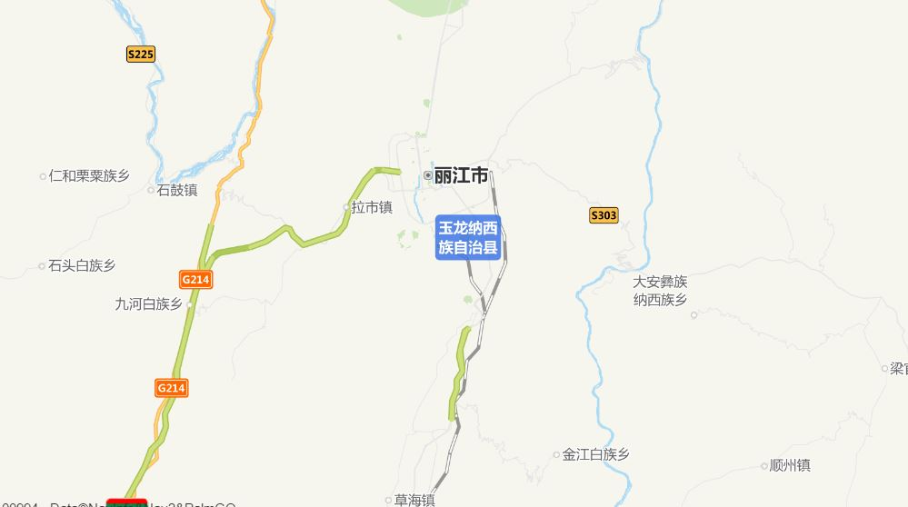
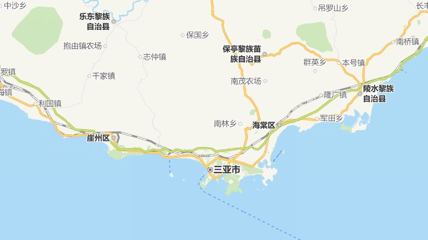
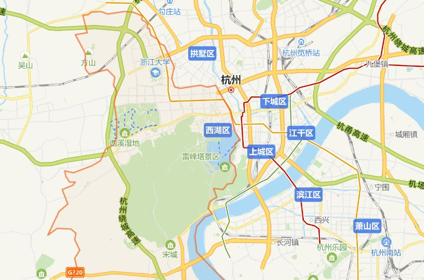

丽江古城位于中国西南部云南省的丽江市古城区，坐落在丽江坝中部，地处云贵高原，中心位于北纬26°52′50.43″， 东经100°13′27.70″，全城面积达7.279平方公里。
 |
三亚是海南省下辖地级市，别称鹿城，位于海南岛的最南端。三亚东邻陵水县，西接乐东县，北毗保亭县，南临南海，介于北纬18°09′34″~18°37′27″、东经108°56′30″~109°48′28″之间
 |
西湖区，位于江西省南昌市中心城区。素有“千年南昌看西湖”的美誉，西湖区面积为39.2平方千米。下辖10个街道、1个镇和1个农场 。2013年，西湖区总人口46万。
 |